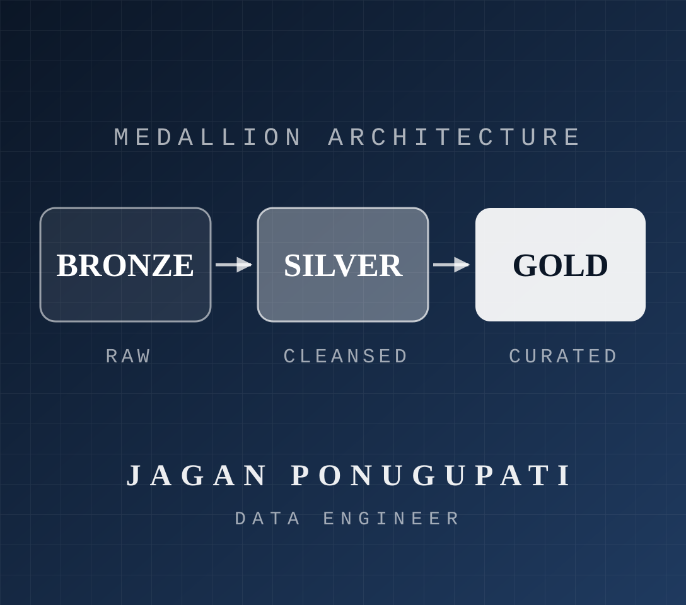

🌊
Water Breathing
Cloud & Data Engineering
- 1st Form: Azure Data Factory
- 2nd Form: ADLS Gen2 · Blob Storage
- 3rd Form: Azure Function Apps · Key Vault
- 4th Form: SSIS
DATA SLAYER CORPS — CLOUD OPS DIVISION
Data Engineer with 3.5+ years forging scalable ETL/ELT pipelines. I hunt down data discrepancies, retire legacy SQL Server & SSAS workloads, and breathe life into enterprise analytics with Azure Data Factory, Microsoft Fabric, SQL, PySpark & Power BI.
Data Engineer with 3.5+ years of experience designing and developing scalable ETL/ELT pipelines for enterprise data integration, cloud migration, and analytics with Azure Data Factory, Microsoft Fabric, SQL, Python/PySpark & Power BI.
CHAPTER 01 · THE STORY

“Set your heart ablaze” — but keep your pipelines cool, observable, and idempotent.
Reliable pipelines. Validated data. Legacy-to-cloud migrations.
I'm Jagan Guru Teja Ponugupati, a Data Engineer from India. For 3.5+ years I've been designing and building scalable ETL/ELT pipelines for enterprise data integration, cloud migration, and analytics. From metadata-driven pipelines and Medallion Architecture to incremental loading, Delta Lake and SCD Type 1 & 2 — I build pipelines that keep data accurate, traceable, and Power BI-ready.
Currently at Amnet Digital, Hyderabad, I work with client CDW — moving order data from MongoDB into Salesforce CPQ, migrating legacy SQL Server & SSAS workloads to Azure and Microsoft Fabric, and keeping Commercial, Canada & Government environments reliably in sync.
CHAPTER 02 · TECHNIQUES
Every slayer masters their forms. These are mine.
Cloud & Data Engineering
Microsoft Fabric
Languages
ETL & Data Processing
Databases & Data Warehousing
Integration, DevOps & BI
CHAPTER 03 · RANK PROGRESSION
From recruit to elite — every rank earned in the field.
Amnet Digital · Hyderabad, India
CHAPTER 04 · FIELD MISSIONS
Legacy cubes, shifting schemas, fragile migrations — all dispatched.
Dec 2023 — Present · Client: CDW
⚡ Challenge: Hardware, software & subscription orders across 3 environments
2023 — Present · Client: CDW
⚡ Challenge: On-prem SQL Server & legacy SSAS cubes
CHAPTER 05 · FINAL SELECTION
Bachelor of Technology · 2019 – 2022 · CGPA 7.35
FINAL CHAPTER · OPEN A COMMS LINK
Got a tough data challenge that needs slaying? Let's talk.